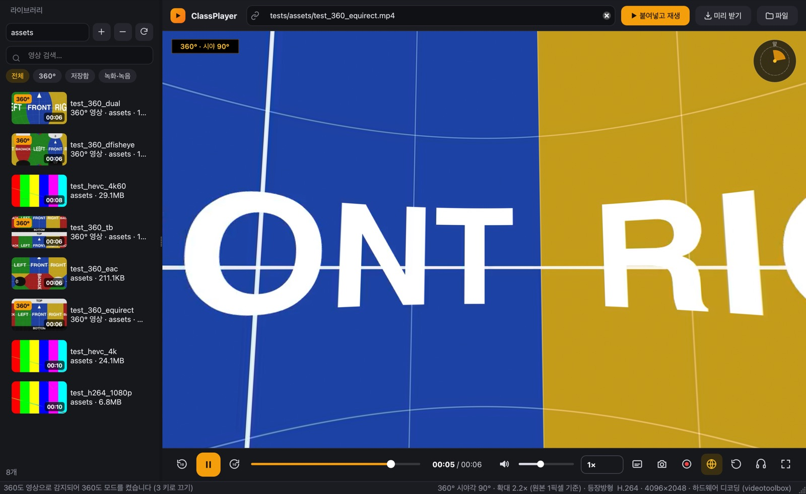
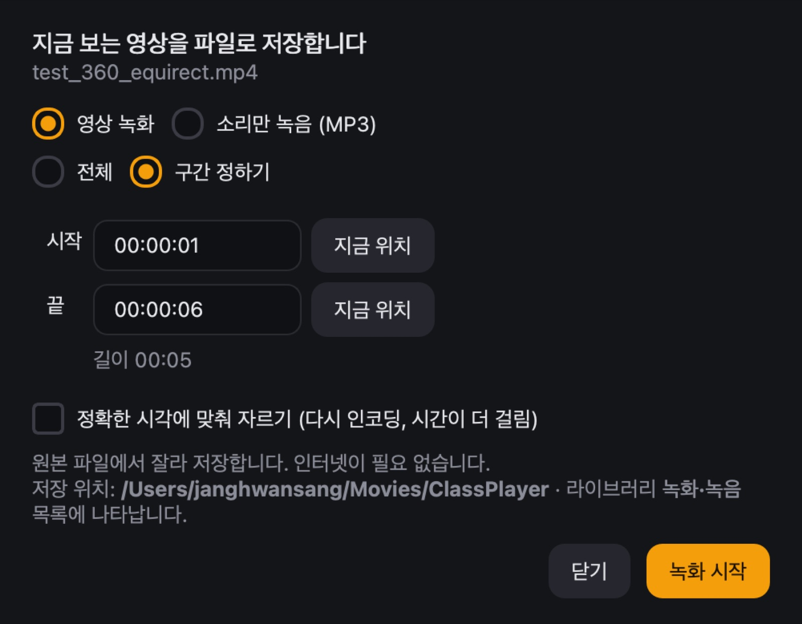

광고 없이, 영상만.
수업을 위한 영상 플레이어
유튜브 링크를 붙여 넣으면 광고와 추천 화면 없이 영상만 나옵니다. 360도 영상, 4K·8K, 모든 코덱을 따로 설치할 것 없이 재생합니다. 맥·윈도우·안드로이드 모두 무료입니다.

수업에 필요한 것만 담았습니다
교실 TV·전자칠판에서 바로 쓰도록 만들었습니다.
광고 없는 유튜브
광고, 추천 영상, 댓글 없이 영상만 재생합니다. 협찬 구간도 자동으로 건너뜁니다.
링크 입력칸에서 바로 검색
"곰 세 마리 동요"처럼 제목을 쓰고 Enter. 결과를 누르면 바로 재생됩니다.
360도 영상
마우스로 끌어 둘러보고 휠로 확대합니다. 유튜브 360, 인스타360(insv), DJI 360(OSV) 원본도 엽니다.
수업 전에 미리 받기
유튜브 영상을 파일로 받아 두면 인터넷이 느린 교실에서도 끊기지 않습니다. 자막도 함께 저장합니다.
모든 코덱, 4K·8K
HEVC(H.265), AV1, VP9 등 코덱 설치 없이 재생합니다. 하드웨어 디코딩으로 4K60도 부드럽습니다.
영상 라이브러리
수업 자료 폴더를 등록하면 썸네일과 함께 모아 보여 주고, 이름으로 찾을 수 있습니다.
필요한 장면만 녹화·녹음
보고 있는 영상의 전체나 일부 구간을 파일로 저장합니다. 저장한 파일은 인터넷 없이도 라이브러리의 '녹화·녹음' 목록에서 바로 재생됩니다.
- 탐색 막대를 Shift+드래그하면 그 구간이 바로 지정됩니다.
- 영상(MP4) 또는 소리만(MP3)으로 저장합니다.
- 유튜브 영상은 그 부분만 받아 옵니다.
- 저장 폴더는 '파일 › 저장 폴더 열기'로 바로 열립니다.

무료 다운로드
항상 최신 버전이 받아집니다. 설치한 뒤에는 앱 안의 '업데이트 확인'으로 새 버전을 받을 수 있습니다.
맥 (Mac)
- 받은 파일을 열고 ClassPlayer를 '응용 프로그램'으로 끌어다 놓습니다.
- 처음 한 번은 응용 프로그램 폴더에서 ClassPlayer를 오른쪽 클릭 › 열기를 누릅니다.
윈도우 (Windows)
- 받은 설치 프로그램을 실행합니다. 시작 메뉴와 바탕화면에 등록됩니다.
- "Windows의 PC 보호" 창이 뜨면 추가 정보 › 실행을 누릅니다.
안드로이드
- 폰에서 이 페이지를 열고 받은 파일을 누릅니다.
- "알 수 없는 앱 설치"를 허용하라는 창이 뜨면 허용합니다.
자주 묻는 질문
더 궁금한 점이나 오류는 앱의 '도움말 › 오류 신고'로 알려 주세요.
정말 무료인가요?
네. 회원 가입이나 결제 없이 쓸 수 있고, 소스 코드도 GitHub에 공개되어 있습니다.
유튜브 영상이 열리지 않아요.
유튜브가 일부 영상(특히 어린이용 영상)의 앱 재생을 막는 경우가 있습니다. 앱이 다른 방법으로 다시 시도하고, 그래도 안 되면 '유튜브에서 열기' 버튼을 보여 줍니다. 수업 전에 '미리 받기'로 파일을 받아 두면 가장 확실합니다.
처음 유튜브 영상을 열 때 몇 초 걸려요.
유튜브 주소를 확인하는 데 3초 안팎이 걸립니다. 한 번 연 영상은 주소를 저장해 두기 때문에 다음부터는 1초 안에 나옵니다. 수업 전에 한 번 열어 두면 수업 중에는 바로 재생됩니다.
맥에서 "확인되지 않은 개발자" 경고가 나와요.
응용 프로그램 폴더에서 ClassPlayer를 오른쪽 클릭하고 '열기'를 누르면 됩니다. 처음 한 번만 하면 됩니다.
기본 영상 플레이어로 쓸 수 있나요?
윈도우에서는 앱의 '설정 › 기본 영상 플레이어로 등록'을 누르세요. 맥에서는 영상 파일을 오른쪽 클릭 › 정보 가져오기 › 다음으로 열기에서 ClassPlayer를 고르고 '모두 변경'을 누르세요.